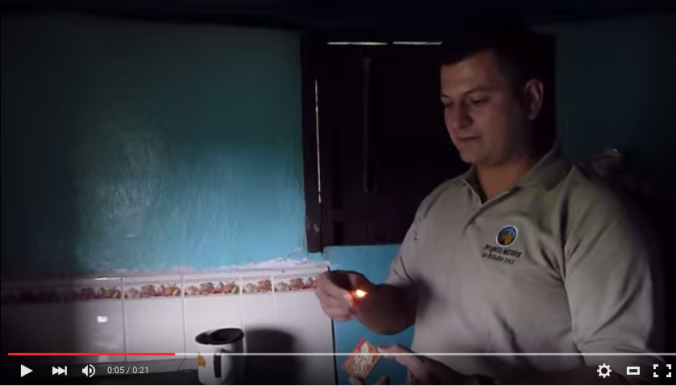

The talented Doña Emilia Mendoza is Director of Proyecto Mirador, Honduras, and she partners in close association with Professor Elder Mendoza (no relation), Chief Operating Officer.
Together they have overseen the scaled up construction of more than 100,000 stoves in the last 5 years by Ejecutores of the project, and collectively manage over 130 employees (both direct and indirect).
Doña Emilia Mendoza
Director, Honduras
Professor Elder Mendoza
Chief Operating Officer
The construction process begins with the generation of a written solicitation from a group of women, a mayor, or a village leader who have heard about the stove and the program. Our solicitations require that each Señora interested in obtaining a stove provide her name and government identification number.
A member of Proyecto Mirador or one of its Ejecutores that will have responsibility for the team that will construct stoves in the area, and the municipality together organize a community meeting to explain to all interested participants the benefits of the stove, the materials each beneificiary must provide, and to set a date for construction of the village. After the meeting, the list of beneficiaries is solidified, and a house by house plan for implementation is developed. Proyecto Mirador sources the construction materials and the Ejecutor responsible for the village delivers them to the job site and assigns the stove builders on his/her team the homes that will be built each day.
Proyecto Mirador currently supports 15 full time businesses including 6 new Ejecutor construction companies and 9 companies that supply the materials.
Professor Elder oversees manufacturing of the plancha and chimney, helps improve stove design, manages receipt of solicitations and delegation to the Ejecutores, and develops the build out schedule by village. He manages follow up visits to beneficiaries by PM Supervisors who use technology to monitor the condition of the stove and insure proper understanding of the necessary maintenance steps.
Proyecto Mirador currently supports 15 full time businesses including 6 new Ejecutor construction companies and 9 companies that supply the materials needed to construct the Dos por Tres stove.
